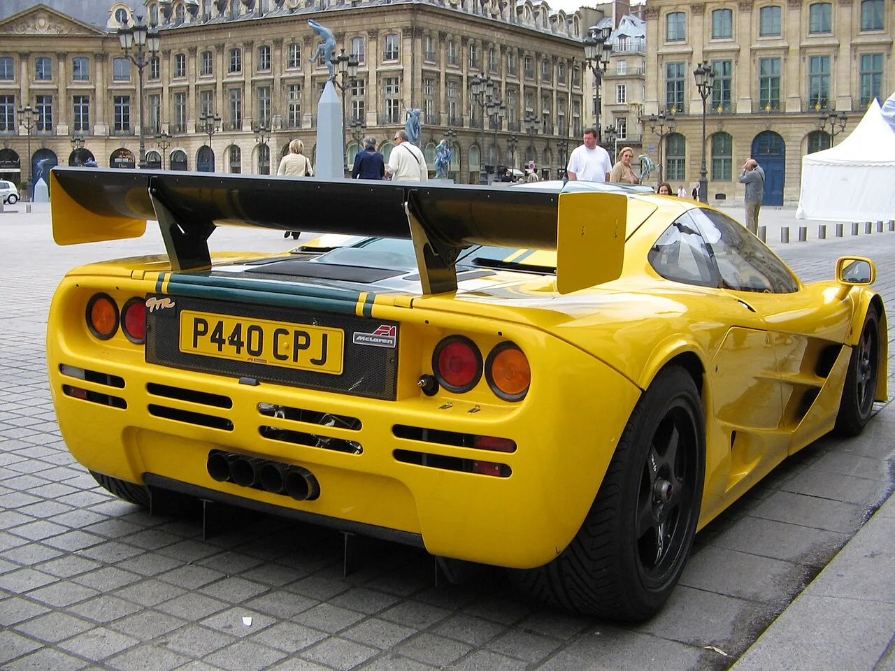

▲ 맥라렌 F1(사진은 레이스 사양 GTR). 1992년 이 차를 끝으로 맥라렌에 수동변속기는 없었다
맥라렌이 몬터레이 카 위크에서 수동변속기를 얹은 콘셉트카를 공개했습니다. 이름은 McL 6GT입니다.
맥라렌이 진짜 수동변속기를 단 차를 내놓는 것은 1992년 공개된 F1 이후 34년 만입니다. 그사이 나온 모든 맥라렌 로드카는 듀얼클러치 자동변속기를 썼습니다.
1. "진짜 수동"이라는 단서가 붙은 이유
이번 발표에서 맥라렌이 강조한 표현은 '진짜 수동변속기'입니다. 이 단서에는 배경이 있습니다.
최근 몇몇 제조사가 '수동 감각'을 되살린다며 내놓은 방식은 바이 와이어(by-wire) 구조입니다. 기어 레버와 클러치 페달이 있지만, 그것이 변속기와 기계적으로 직접 연결되지 않고 전자 신호로 전달되는 방식입니다. 페라리가 준비 중인 시스템이 이런 형태로 알려져 있습니다.
이 방식은 장점이 분명합니다. 오조작을 막을 수 있고, 기존 자동변속기 하드웨어를 그대로 쓰면서 조작감만 얹을 수 있어 개발비가 적게 듭니다. 하지만 레버를 밀 때 기어가 물리는 감각, 클러치가 미끄러지는 지점을 발로 찾는 과정은 완전히 재현되지 않습니다.
맥라렌이 '진짜'라고 못 박은 것은 기계적으로 연결된 전통적 수동변속기를 쓴다는 뜻입니다. 개발 난도와 비용이 훨씬 높은 선택입니다.

▲ 맥라렌 F1 후면. 6.1L V12에 6단 수동을 조합한 이 차가 34년간 유일한 수동 맥라렌이었다
2. 수동만이 아니다 — 유압식 스티어링까지
McL 6GT에서 수동변속기만큼 눈여겨볼 항목이 유압식 스티어링입니다.
현재 거의 모든 신차는 전동식 파워스티어링(EPS)을 씁니다. 연비에 유리하고, 차로 유지 보조 같은 주행보조 기능을 넣으려면 전동식이어야 합니다. 문제는 노면에서 올라오는 미세한 정보가 모터를 거치면서 걸러진다는 점입니다.
유압식은 반대입니다. 연비와 패키징에서 불리하고 주행보조 기능 구현이 어렵지만, 타이어가 노면을 붙잡고 있는 상태가 손끝에 그대로 전달됩니다. 맥라렌은 이 감각을 지키는 브랜드로 오랫동안 평가받아 왔습니다.
여기에 V8 + 후륜구동 + 탄소섬유 모노코크가 더해집니다. 사륜구동도, 하이브리드도 없습니다. 항목을 나열하면 방향이 분명합니다. 기록이 아니라 감각을 파는 차입니다.
| 항목 | 내용 |
|---|---|
| 변속기 | 진짜 수동 (기계식 연결) |
| 엔진 | V8 (배기량·출력 미공개) |
| 구동 | 후륜구동 |
| 스티어링 | 유압식 |
| 차체 | 탄소섬유 모노코크 |
| 공차중량·가속 | 미공개 |
| 양산 시점 | 2028년 예정 |
3. 이름의 뿌리 — 브루스 맥라렌의 미완성 프로젝트
'McL 6GT'라는 이름은 1960년대로 거슬러 올라갑니다. 창업자 브루스 맥라렌이 레이스카를 도로용으로 개조해 만들려 했던 M6GT 프로젝트가 원형입니다.
이 계획은 완성되지 못했습니다. 브루스 맥라렌이 1970년 테스트 중 사고로 세상을 떠나면서 프로젝트가 중단됐기 때문입니다. 브랜드 역사에서 가장 상징적인 미완성 프로젝트로 남아 있습니다.
그 이름을 60년 만에 다시 꺼냈다는 것은, 이 차를 단발성 콘셉트가 아니라 브랜드 정체성을 정리하는 작업으로 위치시키겠다는 의도로 읽힙니다.

▲ 현행 맥라렌 아투라. 하이브리드에 듀얼클러치를 쓴다. McL 6GT는 정반대 방향이다
4. 같은 주에 벌어진 일들
흥미로운 것은 이 발표가 고립된 사건이 아니라는 점입니다. 같은 몬터레이 카 위크에서 비슷한 방향의 차들이 잇따라 나왔습니다.
고든 머레이 S1은 4.2리터 자연흡기 V12에 6단 수동, 3인승 중앙 운전석 구성으로 공개됐습니다. 맥라렌 F1을 설계한 사람이 만든 차라는 점에서 McL 6GT와 뿌리가 겹칩니다.
국내에서도 비슷한 흐름을 볼 수 있습니다. 캐딜락은 472마력 트윈터보 V6에 6단 수동을 조합한 CT4-V 블랙윙의 마지막 연식을 보내는 중이고, 포르쉐는 수동 카레라 S를 다시 라인업에 넣었습니다.
방향은 반대지만 원인은 같습니다. 전동화와 자동화가 빨라질수록, 그 반대편의 희소가치가 올라간다는 것입니다. 대량 판매 차종에서는 규제와 원가 때문에 불가능해진 구성이, 소량 고가 모델에서는 오히려 상품성이 됩니다.
5. 다만 아직 확인되지 않은 것들
기대와 별개로, 지금 공개된 정보는 생각보다 적습니다.
맥라렌은 V8의 배기량과 최고출력, 공차중량, 가속 성능을 모두 공개하지 않았습니다. 가격과 생산 대수도 나오지 않았습니다. 현재로서는 콘셉트카 단계이고, 양산은 2028년 예정입니다.
콘셉트에서 양산까지 2년이 남았다는 점도 감안해야 합니다. 이 기간에 사양이 조정되거나, 규제 대응 과정에서 구성이 바뀔 가능성은 열려 있습니다. 실제로 앞서 다룬 것처럼, 개발 도중 시장 조건이 바뀌어 양산 직전 계획을 접은 사례도 있습니다.
정리하면 McL 6GT는 34년 만의 수동 복귀라는 선언이고, 구체적인 숫자는 아직 그 뒤에 있습니다. 맥라렌이 최근 몇 년간 재무적으로 어려움을 겪어온 점을 감안하면, 이 차가 예정대로 2028년에 나올지도 지켜볼 대목입니다.